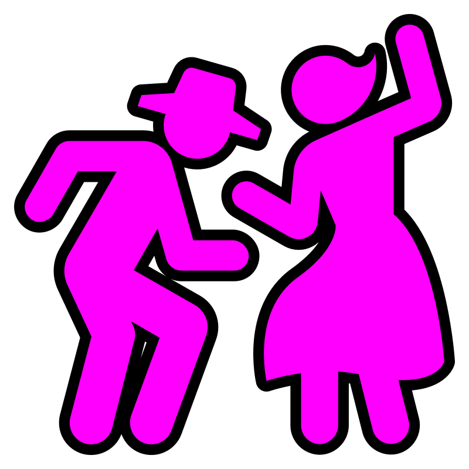
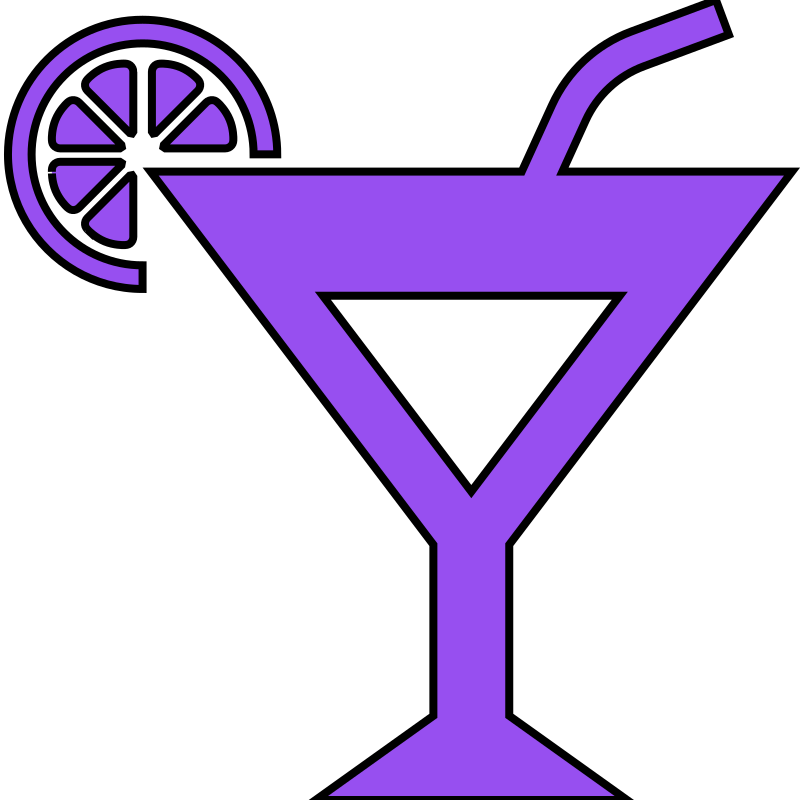
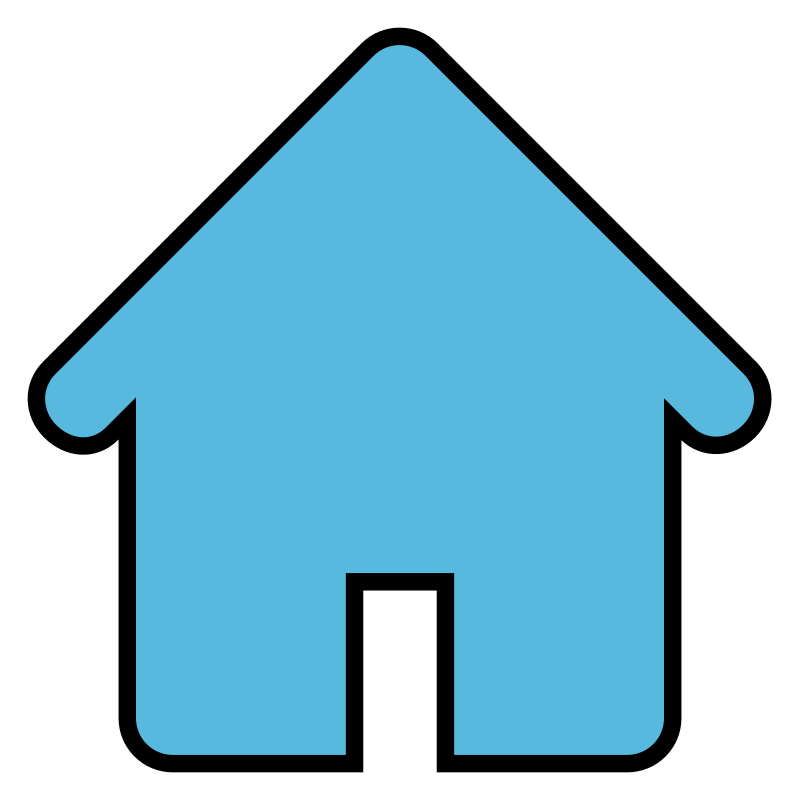

<!doctype html>
<html lang="en">
    <head>
        <meta charset="utf-8">
        <meta http-equiv="X-UA-Compatible" content="IE=edge">
        <meta name="viewport" content="initial-scale=1,user-scalable=no,maximum-scale=1,width=device-width">
        <meta name="mobile-web-app-capable" content="yes">
        <meta name="apple-mobile-web-app-capable" content="yes">
        <link rel="stylesheet" href="css/leaflet.css">
        <link rel="stylesheet" href="css/L.Control.Layers.Tree.css">
        <link rel="stylesheet" href="css/qgis2web.css">
        <link rel="stylesheet" href="css/fontawesome-all.min.css">
        <link rel="stylesheet" href="css/MarkerCluster.css">
        <link rel="stylesheet" href="css/MarkerCluster.Default.css">
        <link rel="stylesheet" href="css/leaflet-search.css">
        <link rel="stylesheet" href="css/filter.css">
        <link rel="stylesheet" href="css/nouislider.min.css">
        <link rel="stylesheet" href="css/leaflet-control-geocoder.Geocoder.css">
        <link rel="stylesheet" href="css/leaflet-measure.css">
        <link rel="stylesheet" href="css/zwielicht.css">
        <style>
        html, body, #map {
            width: 100%;
            height: 100%;
            padding: 0;
            margin: 0;
        }
        </style>
        <title>Hamburg 2080</title>
    </head>
    <body>
        <div id="map">
        </div>
        <script src="js/qgis2web_expressions.js"></script>
        <script src="js/leaflet.js"></script>
        <script src="js/L.Control.Layers.Tree.min.js"></script>
        <script src="js/leaflet.rotatedMarker.js"></script>
        <script src="js/leaflet.pattern.js"></script>
        <script src="js/leaflet-hash.js"></script>
        <script src="js/Autolinker.min.js"></script>
        <script src="js/rbush.min.js"></script>
        <script src="js/labelgun.min.js"></script>
        <script src="js/labels.js"></script>
        <script src="js/leaflet-control-geocoder.Geocoder.js"></script>
        <script src="js/leaflet-measure.js"></script>
        <script src="js/leaflet.markercluster.js"></script>
        <script src="js/leaflet-search.js"></script>
        <script src="js/tailDT.js"></script>
        <script src="js/nouislider.min.js"></script>
        <script src="js/wNumb.js"></script>
        <script src="data/ADLLnder.js"></script>
        <script src="data/ADLLandeshauptstdte.js"></script>
        <script src="data/SOXAreal.js"></script>
        <script src="data/BezirkeHamburg2080.js"></script>
        <script src="data/StadtteileHamburg2080.js"></script>
        <script src="data/OrtsteileHamburg2080.js"></script>
        <script src="data/VerkehrStraenHamburg2080.js"></script>
        <script src="data/VerkehrHamburgffentlich2080.js"></script>
        <script src="data/ZwielichtOrtevonInteresse.js"></script>
        <script>
        var map = L.map('map', {
            zoomControl:false, maxZoom:28, minZoom:1
        }).fitBounds([[53.48162760851828,9.861363897277961],[53.62283219012594,10.231773233834527]]);
        var hash = new L.Hash(map);
        map.attributionControl.setPrefix('<a href="https://github.com/tomchadwin/qgis2web" target="_blank">qgis2web</a> &middot; <a href="https://leafletjs.com" title="A JS library for interactive maps">Leaflet</a> &middot; <a href="https://qgis.org">QGIS</a>');
        var autolinker = new Autolinker({truncate: {length: 30, location: 'smart'}});
        // remove popup's row if "visible-with-data"
        function removeEmptyRowsFromPopupContent(content, feature) {
         var tempDiv = document.createElement('div');
         tempDiv.innerHTML = content;
         var rows = tempDiv.querySelectorAll('tr');
         for (var i = 0; i < rows.length; i++) {
             var td = rows[i].querySelector('td.visible-with-data');
             var key = td ? td.id : '';
             if (td && td.classList.contains('visible-with-data') && feature.properties[key] == null) {
                 rows[i].parentNode.removeChild(rows[i]);
             }
         }
         return tempDiv.innerHTML;
        }
        // add class to format popup if it contains media
        function addClassToPopupIfMedia(content, popup) {
            var tempDiv = document.createElement('div');
            tempDiv.innerHTML = content;
            if (tempDiv.querySelector('td img')) {
                popup._contentNode.classList.add('media');
                    // Delay to force the redraw
                    setTimeout(function() {
                        popup.update();
                    }, 10);
            } else {
                popup._contentNode.classList.remove('media');
            }
        }
        var zoomControl = L.control.zoom({
            position: 'topleft'
        }).addTo(map);
        var measureControl = new L.Control.Measure({
            position: 'topleft',
            primaryLengthUnit: 'meters',
            secondaryLengthUnit: 'kilometers',
            primaryAreaUnit: 'sqmeters',
            secondaryAreaUnit: 'hectares'
        });
        measureControl.addTo(map);
        document.getElementsByClassName('leaflet-control-measure-toggle')[0].innerHTML = '';
        document.getElementsByClassName('leaflet-control-measure-toggle')[0].className += ' fas fa-ruler';
        var bounds_group = new L.featureGroup([]);
        function setBounds() {
        }
        map.createPane('pane_OpenStreetMap_0');
        map.getPane('pane_OpenStreetMap_0').style.zIndex = 400;
        var layer_OpenStreetMap_0 = L.tileLayer('https://tile.openstreetmap.org/{z}/{x}/{y}.png', {
            pane: 'pane_OpenStreetMap_0',
            opacity: 1.0,
            attribution: '',
            minZoom: 1,
            maxZoom: 28,
            minNativeZoom: 0,
            maxNativeZoom: 19
        });
        layer_OpenStreetMap_0;
        map.addLayer(layer_OpenStreetMap_0);
        map.createPane('pane_GoogleMapSattelit_1');
        map.getPane('pane_GoogleMapSattelit_1').style.zIndex = 401;
        var layer_GoogleMapSattelit_1 = L.tileLayer('https://mt1.google.com/vt/lyrs=y&x={x}&y={y}&z={z}', {
            pane: 'pane_GoogleMapSattelit_1',
            opacity: 1.0,
            attribution: '',
            minZoom: 1,
            maxZoom: 28,
            minNativeZoom: 0,
            maxNativeZoom: 18
        });
        layer_GoogleMapSattelit_1;
        map.addLayer(layer_GoogleMapSattelit_1);
        map.createPane('pane_DeutscheBucht_modifiziert_2');
        map.getPane('pane_DeutscheBucht_modifiziert_2').style.zIndex = 402;
        var img_DeutscheBucht_modifiziert_2 = 'data/DeutscheBucht_modifiziert_2.webp';
        var img_bounds_DeutscheBucht_modifiziert_2 = [[52.76421458434122,5.98606744640815],[55.266787272084294,10.782352423057198]];
        var layer_DeutscheBucht_modifiziert_2 = new L.imageOverlay(img_DeutscheBucht_modifiziert_2,
                                              img_bounds_DeutscheBucht_modifiziert_2,
                                              {pane: 'pane_DeutscheBucht_modifiziert_2'});
        bounds_group.addLayer(layer_DeutscheBucht_modifiziert_2);
        map.addLayer(layer_DeutscheBucht_modifiziert_2);
        map.createPane('pane_KarteHamburggerman_modifiziert_3');
        map.getPane('pane_KarteHamburggerman_modifiziert_3').style.zIndex = 403;
        var img_KarteHamburggerman_modifiziert_3 = 'data/KarteHamburggerman_modifiziert_3.webp';
        var img_bounds_KarteHamburggerman_modifiziert_3 = [[53.26079926201627,9.084405533086791],[53.94578239294034,10.667968138817523]];
        var layer_KarteHamburggerman_modifiziert_3 = new L.imageOverlay(img_KarteHamburggerman_modifiziert_3,
                                              img_bounds_KarteHamburggerman_modifiziert_3,
                                              {pane: 'pane_KarteHamburggerman_modifiziert_3'});
        bounds_group.addLayer(layer_KarteHamburggerman_modifiziert_3);
        map.addLayer(layer_KarteHamburggerman_modifiziert_3);
        map.createPane('pane_KarteNeueMitte_modifiziert_4');
        map.getPane('pane_KarteNeueMitte_modifiziert_4').style.zIndex = 404;
        var img_KarteNeueMitte_modifiziert_4 = 'data/KarteNeueMitte_modifiziert_4.webp';
        var img_bounds_KarteNeueMitte_modifiziert_4 = [[53.53187664647549,9.936372624524841],[53.584229830311344,10.178469233375044]];
        var layer_KarteNeueMitte_modifiziert_4 = new L.imageOverlay(img_KarteNeueMitte_modifiziert_4,
                                              img_bounds_KarteNeueMitte_modifiziert_4,
                                              {pane: 'pane_KarteNeueMitte_modifiziert_4'});
        bounds_group.addLayer(layer_KarteNeueMitte_modifiziert_4);
        map.addLayer(layer_KarteNeueMitte_modifiziert_4);
        map.createPane('pane_ZentraleInnenstadt_modifiziert_5');
        map.getPane('pane_ZentraleInnenstadt_modifiziert_5').style.zIndex = 405;
        var img_ZentraleInnenstadt_modifiziert_5 = 'data/ZentraleInnenstadt_modifiziert_5.webp';
        var img_bounds_ZentraleInnenstadt_modifiziert_5 = [[53.54805518577181,9.990187696303144],[53.55470253215785,10.006292625678094]];
        var layer_ZentraleInnenstadt_modifiziert_5 = new L.imageOverlay(img_ZentraleInnenstadt_modifiziert_5,
                                              img_bounds_ZentraleInnenstadt_modifiziert_5,
                                              {pane: 'pane_ZentraleInnenstadt_modifiziert_5'});
        bounds_group.addLayer(layer_ZentraleInnenstadt_modifiziert_5);
        map.addLayer(layer_ZentraleInnenstadt_modifiziert_5);
        function pop_ADLLnder(feature, layer) {
            var popupContent = '<table>\
                    <tr>\
                        <td colspan="2">' + (feature.properties['Name'] !== null ? autolinker.link(String(feature.properties['Name']).replace(/'/g, '\'').toLocaleString()) : '') + '</td>\
                    </tr>\
                    <tr>\
                        <td colspan="2">' + (feature.properties['Beschreibung'] !== null ? autolinker.link(String(feature.properties['Beschreibung']).replace(/'/g, '\'').toLocaleString()) : '') + '</td>\
                    </tr>\
                    <tr>\
                        <th scope="row">Einwohnerzahl</th>\
                        <td class="visible-with-data" id="Einwohnerzahl">' + (feature.properties['Einwohnerzahl'] !== null ? autolinker.link(String(feature.properties['Einwohnerzahl']).replace(/'/g, '\'').toLocaleString()) : '') + '</td>\
                    </tr>\
                    <tr>\
                        <th scope="row">Metamenschliche Verteilung</th>\
                        <td class="visible-with-data" id="Metamenschliche_Verteilung">' + (feature.properties['Metamenschliche_Verteilung'] !== null ? autolinker.link(String(feature.properties['Metamenschliche_Verteilung']).replace(/'/g, '\'').toLocaleString()) : '') + '</td>\
                    </tr>\
                    <tr>\
                        <th scope="row">Personen unter Armutsgrenze</th>\
                        <td class="visible-with-data" id="Personen_Unter_Armutsgrenze">' + (feature.properties['Personen_Unter_Armutsgrenze'] !== null ? autolinker.link(String(feature.properties['Personen_Unter_Armutsgrenze']).replace(/'/g, '\'').toLocaleString()) : '') + '</td>\
                    </tr>\
                    <tr>\
                        <th scope="row">Personen mit Konzernzugehörigkeit</th>\
                        <td class="visible-with-data" id="Personen_mit_Konzernzugehörigkeit">' + (feature.properties['Personen_mit_Konzernzugehörigkeit'] !== null ? autolinker.link(String(feature.properties['Personen_mit_Konzernzugehörigkeit']).replace(/'/g, '\'').toLocaleString()) : '') + '</td>\
                    </tr>\
                    <tr>\
                        <th scope="row">Bildung</th>\
                        <td class="visible-with-data" id="Bildung">' + (feature.properties['Bildung'] !== null ? autolinker.link(String(feature.properties['Bildung']).replace(/'/g, '\'').toLocaleString()) : '') + '</td>\
                    </tr>\
                    <tr>\
                        <th scope="row">Pro-Kopf-Einkommen</th>\
                        <td class="visible-with-data" id="Pro_Kopf_Einkommen">' + (feature.properties['Pro_Kopf_Einkommen'] !== null ? autolinker.link(String(feature.properties['Pro_Kopf_Einkommen']).replace(/'/g, '\'').toLocaleString()) : '') + '</td>\
                    </tr>\
                    <tr>\
                        <th scope="row">Personen ohne SIN</th>\
                        <td class="visible-with-data" id="Personen_Ohne_SIN">' + (feature.properties['Personen_Ohne_SIN'] !== null ? autolinker.link(String(feature.properties['Personen_Ohne_SIN']).replace(/'/g, '\'').toLocaleString()) : '') + '</td>\
                    </tr>\
                    <tr>\
                        <th scope="row">Sicherheit</th>\
                        <td class="visible-with-data" id="Sicherheit">' + (feature.properties['Sicherheit'] !== null ? autolinker.link(String(feature.properties['Sicherheit']).replace(/'/g, '\'').toLocaleString()) : '') + '</td>\
                    </tr>\
                    <tr>\
                        <th scope="row">Medizinische Versorgung</th>\
                        <td class="visible-with-data" id="Medizinische_Versorgung">' + (feature.properties['Medizinische_Versorgung'] !== null ? autolinker.link(String(feature.properties['Medizinische_Versorgung']).replace(/'/g, '\'').toLocaleString()) : '') + '</td>\
                    </tr>\
                    <tr>\
                        <th scope="row">Religiöse Zugehörigkeit</th>\
                        <td class="visible-with-data" id="Religiöse_Zugehörigkeit">' + (feature.properties['Religiöse_Zugehörigkeit'] !== null ? autolinker.link(String(feature.properties['Religiöse_Zugehörigkeit']).replace(/'/g, '\'').toLocaleString()) : '') + '</td>\
                    </tr>\
                    <tr>\
                        <td colspan="2">' + (feature.properties['wiki'] !== null ? autolinker.link(String(feature.properties['wiki']).replace(/'/g, '\'').toLocaleString()) : '') + '</td>\
                    </tr>\
                </table>';
            var content = removeEmptyRowsFromPopupContent(popupContent, feature);
            layer.on('popupopen', function(e) {
                addClassToPopupIfMedia(content, e.popup);
            });
            layer.bindPopup(content, { maxHeight: 400 });
        }

        function style_ADLLnder_0() {
            return {
                pane: 'pane_ADLLnder',
                opacity: 1,
                color: 'rgba(35,35,35,1.0)',
                dashArray: '',
                lineCap: 'butt',
                lineJoin: 'miter',
                weight: 1.0, 
                fillOpacity: 0,
                interactive: true,
            }
        }
        map.createPane('pane_ADLLnder');
        map.getPane('pane_ADLLnder').style.zIndex = 410;
        map.getPane('pane_ADLLnder').style['mix-blend-mode'] = 'normal';
        var layer_ADLLnder = new L.geoJson(json_ADLLnder, {
            attribution: '',
            interactive: true,
            dataVar: 'json_ADLLnder',
            layerName: 'layer_ADLLnder',
            pane: 'pane_ADLLnder',
            onEachFeature: pop_ADLLnder,
            style: style_ADLLnder_0,
        });
        bounds_group.addLayer(layer_ADLLnder);
        map.addLayer(layer_ADLLnder);
        function pop_ADLLandeshauptstdte(feature, layer) {
            var popupContent = '<table>\
                    <tr>\
                        <td colspan="2">' + (feature.properties['Name'] !== null ? autolinker.link(String(feature.properties['Name']).replace(/'/g, '\'').toLocaleString()) : '') + '</td>\
                    </tr>\
                    <tr>\
                        <td colspan="2">' + (feature.properties['description'] !== null ? autolinker.link(String(feature.properties['description']).replace(/'/g, '\'').toLocaleString()) : '') + '</td>\
                    </tr>\
                </table>';
            var content = removeEmptyRowsFromPopupContent(popupContent, feature);
            layer.on('popupopen', function(e) {
                addClassToPopupIfMedia(content, e.popup);
            });
            layer.bindPopup(content, { maxHeight: 400 });
        }

        function style_ADLLandeshauptstdte_0() {
            return {
                pane: 'pane_ADLLandeshauptstdte',
                radius: 6.0,
                opacity: 1,
                color: 'rgba(128,17,25,1.0)',
                dashArray: '',
                lineCap: 'butt',
                lineJoin: 'miter',
                weight: 2.0,
                fill: true,
                fillOpacity: 1,
                fillColor: 'rgba(219,30,42,1.0)',
                interactive: true,
            }
        }
        map.createPane('pane_ADLLandeshauptstdte');
        map.getPane('pane_ADLLandeshauptstdte').style.zIndex = 411;
        map.getPane('pane_ADLLandeshauptstdte').style['mix-blend-mode'] = 'normal';
        var layer_ADLLandeshauptstdte = new L.geoJson(json_ADLLandeshauptstdte, {
            attribution: '',
            interactive: true,
            dataVar: 'json_ADLLandeshauptstdte',
            layerName: 'layer_ADLLandeshauptstdte',
            pane: 'pane_ADLLandeshauptstdte',
            onEachFeature: pop_ADLLandeshauptstdte,
            pointToLayer: function (feature, latlng) {
                var context = {
                    feature: feature,
                    variables: {}
                };
                return L.circleMarker(latlng, style_ADLLandeshauptstdte_0(feature));
            },
        });
        bounds_group.addLayer(layer_ADLLandeshauptstdte);
        map.addLayer(layer_ADLLandeshauptstdte);
        function pop_SOXAreal(feature, layer) {
            var popupContent = '<table>\
                    <tr>\
                        <td colspan="2">' + (feature.properties['Name'] !== null ? autolinker.link(String(feature.properties['Name']).replace(/'/g, '\'').toLocaleString()) : '') + '</td>\
                    </tr>\
                    <tr>\
                        <td colspan="2">' + (feature.properties['description'] !== null ? autolinker.link(String(feature.properties['description']).replace(/'/g, '\'').toLocaleString()) : '') + '</td>\
                    </tr>\
                </table>';
            var content = removeEmptyRowsFromPopupContent(popupContent, feature);
            layer.on('popupopen', function(e) {
                addClassToPopupIfMedia(content, e.popup);
            });
            layer.bindPopup(content, { maxHeight: 400 });
        }

        function style_SOXAreal_0() {
            return {
                pane: 'pane_SOXAreal',
                opacity: 1,
                color: 'rgba(35,35,35,0.4)',
                dashArray: '',
                lineCap: 'butt',
                lineJoin: 'miter',
                weight: 1.0, 
                fill: true,
                fillOpacity: 1,
                fillColor: 'rgba(166,166,75,0.4)',
                interactive: true,
            }
        }
        map.createPane('pane_SOXAreal');
        map.getPane('pane_SOXAreal').style.zIndex = 412;
        map.getPane('pane_SOXAreal').style['mix-blend-mode'] = 'normal';
        var layer_SOXAreal = new L.geoJson(json_SOXAreal, {
            attribution: '',
            interactive: true,
            dataVar: 'json_SOXAreal',
            layerName: 'layer_SOXAreal',
            pane: 'pane_SOXAreal',
            onEachFeature: pop_SOXAreal,
            style: style_SOXAreal_0,
        });
        bounds_group.addLayer(layer_SOXAreal);
        map.addLayer(layer_SOXAreal);

        function pop_BezirkeHamburg2080(feature, layer) {
            var popupContent = '<table>\
                    <tr>\
                        <td colspan="2">' + (feature.properties['name'] !== null ? autolinker.link(String(feature.properties['name']).replace(/'/g, '\'').toLocaleString()) : '') + '</td>\
                    </tr>\
                    <tr>\
                        <td class="visible-with-data" id="notiz" colspan="2"><strong>Beschreibung</strong><br />' + (feature.properties['notiz'] !== null ? autolinker.link(String(feature.properties['notiz']).replace(/'/g, '\'').toLocaleString()) : '') + '</td>\
                    </tr>\
                    <tr>\
                        <td colspan="2">' + (feature.properties['gebiet'] !== null ? autolinker.link(String(feature.properties['gebiet']).replace(/'/g, '\'').toLocaleString()) : '') + '</td>\
                    </tr>\
                </table>';
            var content = removeEmptyRowsFromPopupContent(popupContent, feature);
            layer.on('popupopen', function(e) {
                addClassToPopupIfMedia(content, e.popup);
            });
            layer.bindPopup(content, { maxHeight: 400 });
        }

        function style_BezirkeHamburg2080_0() {
            return {
                pane: 'pane_BezirkeHamburg2080',
                opacity: 1,
                color: 'rgba(108,12,96,1.0)',
                dashArray: '',
                lineCap: 'square',
                lineJoin: 'bevel',
                weight: 3.0,
                fillOpacity: 0,
                interactive: true,
            }
        }

        // Add labels for Bezirke
        function addBezirkLabels(layer) {
            layer.eachLayer(function (lyr) {
                if (lyr.feature && lyr.feature.properties && lyr.feature.properties.name) {
                    var center = lyr.getBounds().getCenter();
                    var label = L.marker(center, {
                        icon: L.divIcon({
                            className: 'bezirk-label',
                            html: '<span style="color:#3a0066;font-weight:bold;font-size:1.7em;text-shadow:1px 1px 4px #fff;">' + lyr.feature.properties.name + '</span>',
                            iconSize: [120, 30]
                        }),
                        interactive: false
                    });
                    lyr._bezirkLabel = label;
                    if (map.getZoom() >= 10 && map.getZoom() <= 13) {
                        label.addTo(map);
                    }
                }
            });
        }

        // Remove labels
        function removeBezirkLabels(layer) {
            layer.eachLayer(function (lyr) {
                if (lyr._bezirkLabel) {
                    map.removeLayer(lyr._bezirkLabel);
                    lyr._bezirkLabel = null;
                }
            });
        }

        // Update labels on zoom
        map.on('zoomend', function () {
            if (map.hasLayer(layer_BezirkeHamburg2080)) {
                removeBezirkLabels(layer_BezirkeHamburg2080);
                if (map.getZoom() >= 10 && map.getZoom() <= 13) {
                    addBezirkLabels(layer_BezirkeHamburg2080);
                }
            }
        });

        // Initial label display
        map.whenReady(function () {
            if (map.hasLayer(layer_BezirkeHamburg2080) && map.getZoom() >= 10 && map.getZoom() <= 13) {
                addBezirkLabels(layer_BezirkeHamburg2080);
            }
        });

        // // Add some CSS for the label
        // var style = document.createElement('style');
        // style.innerHTML = `
        // .bezirk-label {
        //     pointer-events: none;
        //     text-align: center;
        //     white-space: nowrap;
        // }
        // `;
        // document.head.appendChild(style);
        map.createPane('pane_BezirkeHamburg2080');
        map.getPane('pane_BezirkeHamburg2080').style.zIndex = 420;
        map.getPane('pane_BezirkeHamburg2080').style['mix-blend-mode'] = 'normal';
        var layer_BezirkeHamburg2080 = new L.geoJson(json_BezirkeHamburg2080, {
            attribution: '',
            interactive: true,
            dataVar: 'json_BezirkeHamburg2080',
            layerName: 'layer_BezirkeHamburg2080',
            pane: 'pane_BezirkeHamburg2080',
            onEachFeature: pop_BezirkeHamburg2080,
            style: style_BezirkeHamburg2080_0,
        });
        bounds_group.addLayer(layer_BezirkeHamburg2080);
        map.addLayer(layer_BezirkeHamburg2080);
        function pop_StadtteileHamburg2080(feature, layer) {
            var popupContent = '<table>\
                    <tr>\
                        <td colspan="2">' + (feature.properties['name'] !== null ? autolinker.link(String(feature.properties['name']).replace(/'/g, '\'').toLocaleString()) : '') + '</td>\
                    </tr>\
                    <tr>\
                        <th scope="row">Sicherheitszone</th>\
                        <td class="visible-with-data" id="wohn">' + (feature.properties['wohn'] !== null ? autolinker.link(String(feature.properties['wohn']).replace(/'/g, '\'').toLocaleString()) : '') + '</td>\
                    </tr>\
                    <tr>\
                        <th scope="row">Bezirk</th>\
                        <td class="visible-with-data" id="bezirk">' + (feature.properties['bezirk'] !== null ? autolinker.link(String(feature.properties['bezirk']).replace(/'/g, '\'').toLocaleString()) : '') + '</td>\
                    </tr>\
                    <tr>\
                        <td colspan="2">' + (feature.properties['gebiet'] !== null ? autolinker.link(String(feature.properties['gebiet']).replace(/'/g, '\'').toLocaleString()) : '') + '</td>\
                    </tr>\
                </table>';
            var content = removeEmptyRowsFromPopupContent(popupContent, feature);
            layer.on('popupopen', function(e) {
                addClassToPopupIfMedia(content, e.popup);
            });
            layer.bindPopup(content, { maxHeight: 400 });
        }

        function style_StadtteileHamburg2080_0() {
            return {
                pane: 'pane_StadtteileHamburg2080',
                opacity: 1,
                color: 'rgba(159,34,143,1.0)',
                dashArray: '3.0,10.0',
                lineCap: 'square',
                lineJoin: 'bevel',
                weight: 2.5,
                fillOpacity: 0,
                interactive: true,
            }
        }
        map.createPane('pane_StadtteileHamburg2080');
        map.getPane('pane_StadtteileHamburg2080').style.zIndex = 421;
        map.getPane('pane_StadtteileHamburg2080').style['mix-blend-mode'] = 'normal';
        var layer_StadtteileHamburg2080 = new L.geoJson(json_StadtteileHamburg2080, {
            attribution: '',
            interactive: true,
            dataVar: 'json_StadtteileHamburg2080',
            layerName: 'layer_StadtteileHamburg2080',
            pane: 'pane_StadtteileHamburg2080',
            onEachFeature: pop_StadtteileHamburg2080,
            style: style_StadtteileHamburg2080_0,
        });
        bounds_group.addLayer(layer_StadtteileHamburg2080);
        map.addLayer(layer_StadtteileHamburg2080);
        function pop_OrtsteileHamburg2080(feature, layer) {
            var popupContent = '<table>\
                    <tr>\
                        <td colspan="2">' + (feature.properties['name'] !== null ? autolinker.link(String(feature.properties['name']).replace(/'/g, '\'').toLocaleString()) : '') + '</td>\
                    </tr>\
                    <tr>\
                        <th scope="row">Sicherheitszone</th>\
                        <td class="visible-with-data" id="wohn">' + (feature.properties['wohn'] !== null ? autolinker.link(String(feature.properties['wohn']).replace(/'/g, '\'').toLocaleString()) : '') + '</td>\
                    </tr>\
                    <tr>\
                        <th scope="row">Stadtteil</th>\
                        <td class="visible-with-data" id="stadtteil">' + (feature.properties['stadtteil'] !== null ? autolinker.link(String(feature.properties['stadtteil']).replace(/'/g, '\'').toLocaleString()) : '') + '</td>\
                    </tr>\
                    <tr>\
                        <td colspan="2">' + (feature.properties['notiz'] !== null ? autolinker.link(String(feature.properties['notiz']).replace(/'/g, '\'').toLocaleString()) : '') + '</td>\
                    </tr>\
                </table>';
            var content = removeEmptyRowsFromPopupContent(popupContent, feature);
            layer.on('popupopen', function(e) {
                addClassToPopupIfMedia(content, e.popup);
            });
            layer.bindPopup(content, { maxHeight: 400 });
        }

        function style_OrtsteileHamburg2080_0() {
            return {
                pane: 'pane_OrtsteileHamburg2080',
                opacity: 1,
                color: 'rgba(184,20,163,1.0)',
                dashArray: '2.0,4.0',
                lineCap: 'square',
                lineJoin: 'bevel',
                weight: 2.0,
                fillOpacity: 0,
                interactive: true,
            }
        }
        map.createPane('pane_OrtsteileHamburg2080');
        map.getPane('pane_OrtsteileHamburg2080').style.zIndex = 422;
        map.getPane('pane_OrtsteileHamburg2080').style['mix-blend-mode'] = 'normal';
        var layer_OrtsteileHamburg2080 = new L.geoJson(json_OrtsteileHamburg2080, {
            attribution: '',
            interactive: true,
            dataVar: 'json_OrtsteileHamburg2080',
            layerName: 'layer_OrtsteileHamburg2080',
            pane: 'pane_OrtsteileHamburg2080',
            onEachFeature: pop_OrtsteileHamburg2080,
            style: style_OrtsteileHamburg2080_0,
        });
        bounds_group.addLayer(layer_OrtsteileHamburg2080);
        map.addLayer(layer_OrtsteileHamburg2080);
        function pop_VerkehrStraenHamburg2080(feature, layer) {
            var popupContent = '<table>\
                    <tr>\
                        <td colspan="2">' + (feature.properties['bezeichnung'] !== null ? autolinker.link(String(feature.properties['bezeichnung']).replace(/'/g, '\'').toLocaleString()) : '') + '</td>\
                    </tr>\
                    <tr>\
                        <td colspan="2">' + (feature.properties['v_typ'] !== null ? autolinker.link(String(feature.properties['v_typ']).replace(/'/g, '\'').toLocaleString()) : '') + '</td>\
                    </tr>\
                    <tr>\
                        <th scope="row">Von - bis (NS/WO)</th>\
                        <td colspan="2">' + (feature.properties['notizen'] !== null ? autolinker.link(String(feature.properties['notizen']).replace(/'/g, '\'').toLocaleString()) : '') + '</td>\
                    </tr>\
                </table>';
            var content = removeEmptyRowsFromPopupContent(popupContent, feature);
            layer.on('popupopen', function(e) {
                addClassToPopupIfMedia(content, e.popup);
            });
            layer.bindPopup(content, { maxHeight: 400 });
        }

        function style_VerkehrStraenHamburg2080_0(feature) {
            switch(String(feature.properties['v_typ'])) {
                case 'Autobahn':
                    return {
                pane: 'pane_VerkehrStraenHamburg2080',
                opacity: 1,
                color: 'rgba(60,132,195,1.0)',
                dashArray: '',
                lineCap: 'round',
                lineJoin: 'round',
                weight: 7.5,
                fillOpacity: 1,
                interactive: true,
                stroke: true,
            }
                    break;
                case 'EuroRoute':
                    return {
                pane: 'pane_VerkehrStraenHamburg2080',
                opacity: 1,
                color: 'rgba(120, 205, 164,1.0)',
                dashArray: '',
                lineCap: 'round',
                lineJoin: 'round',
                weight: 8.0,
                fillOpacity: 0,
                interactive: true,
            }
                    break;
                default:
                    return {
                pane: 'pane_VerkehrStraenHamburg2080',
                opacity: 1,
                color: 'rgba(0,0,0,1.0)',
                dashArray: '',
                lineCap: 'round',
                lineJoin: 'round',
                weight: 380.0,
                fillOpacity: 0,
                interactive: true,
            }
                    break;
            }
        }
        map.createPane('pane_VerkehrStraenHamburg2080');
        map.getPane('pane_VerkehrStraenHamburg2080').style.zIndex = 430;
        map.getPane('pane_VerkehrStraenHamburg2080').style['mix-blend-mode'] = 'normal';
        var layer_VerkehrStraenHamburg2080 = new L.geoJson(json_VerkehrStraenHamburg2080, {
            attribution: '',
            interactive: true,
            dataVar: 'json_VerkehrStraenHamburg2080',
            layerName: 'layer_VerkehrStraenHamburg2080',
            pane: 'pane_VerkehrStraenHamburg2080',
            onEachFeature: pop_VerkehrStraenHamburg2080,
            style: style_VerkehrStraenHamburg2080_0,
        });
        bounds_group.addLayer(layer_VerkehrStraenHamburg2080);
        map.addLayer(layer_VerkehrStraenHamburg2080);
        function pop_VerkehrHamburgffentlich2080(feature, layer) {
            var popupContent = '<table>\
                    <tr>\
                        <td colspan="2">' + (feature.properties['bezeichnung'] !== null ? autolinker.link(String(feature.properties['bezeichnung']).replace(/'/g, '\'').toLocaleString()) : '') + '</td>\
                    </tr>\
                    <tr>\
                        <th scope="row">Typ</th>\
                        <td class="visible-with-data" id="v_typ">' + (feature.properties['v_typ'] !== null ? autolinker.link(String(feature.properties['v_typ']).replace(/'/g, '\'').toLocaleString()) : '') + '</td>\
                    </tr>\
                    <tr>\
                        <td class="visible-with-data" id="notiz" colspan="2"><strong>notiz</strong><br />' + (feature.properties['notiz'] !== null ? autolinker.link(String(feature.properties['notiz']).replace(/'/g, '\'').toLocaleString()) : '') + '</td>\
                    </tr>\
                </table>';
            var content = removeEmptyRowsFromPopupContent(popupContent, feature);
            layer.on('popupopen', function(e) {
                addClassToPopupIfMedia(content, e.popup);
            });
            layer.bindPopup(content, { maxHeight: 400 });
        }

        function style_VerkehrHamburgffentlich2080_0(feature) {
            switch(String(feature.properties['bezeichnung'])) {
                case 'H1':
                    return {
                pane: 'pane_VerkehrHamburgffentlich2080',
                opacity: 1,
                color: 'rgba(247,252,245,1.0)',
                dashArray: '20.0,10.0',
                lineCap: 'butt',
                lineJoin: 'bevel',
                weight: 5.0,
                fillOpacity: 0,
                interactive: true,
            }
                    break;
                case 'H2':
                    return {
                pane: 'pane_VerkehrHamburgffentlich2080',
                opacity: 1,
                color: 'rgba(221,242,215,1.0)',
                dashArray: '20.0,10.0',
                lineCap: 'butt',
                lineJoin: 'bevel',
                weight: 5.0,
                fillOpacity: 0,
                interactive: true,
            }
                    break;
                case 'H3/1':
                    return {
                pane: 'pane_VerkehrHamburgffentlich2080',
                opacity: 1,
                color: 'rgba(178,224,171,1.0)',
                dashArray: '20.0,10.0',
                lineCap: 'butt',
                lineJoin: 'bevel',
                weight: 5.0,
                fillOpacity: 0,
                interactive: true,
            }
                    break;
                case 'H3/2':
                    return {
                pane: 'pane_VerkehrHamburgffentlich2080',
                opacity: 1,
                color: 'rgba(123,199,124,1.0)',
                dashArray: '20.0,10.0',
                lineCap: 'butt',
                lineJoin: 'bevel',
                weight: 5.0,
                fillOpacity: 0,
                interactive: true,
            }
                    break;
                case 'H4':
                    return {
                pane: 'pane_VerkehrHamburgffentlich2080',
                opacity: 1,
                color: 'rgba(61,167,90,1.0)',
                dashArray: '20.0,10.0',
                lineCap: 'butt',
                lineJoin: 'bevel',
                weight: 5.0,
                fillOpacity: 0,
                interactive: true,
            }
                    break;
                case 'H5':
                    return {
                pane: 'pane_VerkehrHamburgffentlich2080',
                opacity: 1,
                color: 'rgba(19,126,58,1.0)',
                dashArray: '20.0,10.0',
                lineCap: 'butt',
                lineJoin: 'bevel',
                weight: 5.0,
                fillOpacity: 0,
                interactive: true,
            }
                    break;
                default:
                    return {
                pane: 'pane_VerkehrHamburgffentlich2080',
                opacity: 1,
                color: 'rgba(0,68,27,1.0)',
                dashArray: '20.0,10.0',
                lineCap: 'butt',
                lineJoin: 'bevel',
                weight: 5.0,
                fillOpacity: 0,
                interactive: true,
            }
                    break;
            }
        }
        map.createPane('pane_VerkehrHamburgffentlich2080');
        map.getPane('pane_VerkehrHamburgffentlich2080').style.zIndex = 431;
        map.getPane('pane_VerkehrHamburgffentlich2080').style['mix-blend-mode'] = 'normal';
        var layer_VerkehrHamburgffentlich2080 = new L.geoJson(json_VerkehrHamburgffentlich2080, {
            attribution: '',
            interactive: true,
            dataVar: 'json_VerkehrHamburgffentlich2080',
            layerName: 'layer_VerkehrHamburgffentlich2080',
            pane: 'pane_VerkehrHamburgffentlich2080',
            onEachFeature: pop_VerkehrHamburgffentlich2080,
            style: style_VerkehrHamburgffentlich2080_0,
        });
        bounds_group.addLayer(layer_VerkehrHamburgffentlich2080);
        map.addLayer(layer_VerkehrHamburgffentlich2080);
        function pop_ZwielichtOrtevonInteresse(feature, layer) {
            var popupContent = '<table>\
                    <tr>\
                        <td colspan="2">' + (feature.properties['name_ort'] !== null ? autolinker.link(String(feature.properties['name_ort']).replace(/'/g, '\'').toLocaleString()) : '') + '</td>\
                    </tr>\
                    <tr>\
                        <td class="visible-with-data" id="adresse" colspan="2"><strong>Adresse</strong><br />' + (feature.properties['adresse'] !== null ? autolinker.link(String(feature.properties['adresse']).replace(/'/g, '\'').toLocaleString()) : '') + '</td>\
                    </tr>\
                    <tr>\
                        <th scope="row">Eigentümer</th>\
                        <td class="visible-with-data" id="eigentümer">' + (feature.properties['eigentümer'] !== null ? autolinker.link(String(feature.properties['eigentümer']).replace(/'/g, '\'').toLocaleString()) : '') + '</td>\
                    </tr>\
                    <tr>\
                        <th scope="row">Region</th>\
                        <td class="visible-with-data" id="region">' + (feature.properties['region'] !== null ? autolinker.link(String(feature.properties['region']).replace(/'/g, '\'').toLocaleString()) : '') + '</td>\
                    </tr>\
                    <tr>\
                        <td class="visible-with-data" id="notiz" colspan="2"><strong>Kurzbeschreibung</strong><br />' + (feature.properties['notiz'] !== null ? autolinker.link(String(feature.properties['notiz']).replace(/'/g, '\'').toLocaleString()) : '') + '</td>\
                    </tr>\
                    <tr>\
                        <td colspan="2">' + (feature.properties['wiki'] !== null ? autolinker.link(String(feature.properties['wiki']).replace(/'/g, '\'').toLocaleString()) : '') + '</td>\
                    </tr>\
                </table>';
            var content = removeEmptyRowsFromPopupContent(popupContent, feature);
            layer.on('popupopen', function(e) {
                addClassToPopupIfMedia(content, e.popup);
            });
            layer.bindPopup(content, { maxHeight: 400 });
        }
        function style_ZwielichtOrtevonInteresse_0(feature) {
            switch(String(feature.properties['typ'])) {
                case 'Ausgehen':
                    return {
                pane: 'pane_ZwielichtOrtevonInteresse',
                rotationAngle: 0.0,
                rotationOrigin: 'center center',
                icon: L.icon({
                    iconUrl: 'markers/party-fun-dance-enjoy-svgrepo-com.svg',
                    iconSize: [19.0, 19.0]
                }),
                interactive: true,
            }
                    break;
                case 'Bars und Kneipen':
                    return {
                pane: 'pane_ZwielichtOrtevonInteresse',
                rotationAngle: 0.0,
                rotationOrigin: 'center center',
                icon: L.icon({
                    iconUrl: 'markers/cocktail-5-svgrepo-com.svg',
                    iconSize: [19.0, 19.0]
                }),
                interactive: true,
            }
                    break;
                case 'Einkaufen':
                    return {
                pane: 'pane_ZwielichtOrtevonInteresse',
                rotationAngle: 0.0,
                rotationOrigin: 'center center',
                icon: L.icon({
                    iconUrl: 'markers/shopping-card-svgrepo-com.svg',
                    iconSize: [19.0, 19.0]
                }),
                interactive: true,
            }
                    break;
                case 'Freizeit':
                    return {
                pane: 'pane_ZwielichtOrtevonInteresse',
                rotationAngle: 0.0,
                rotationOrigin: 'center center',
                icon: L.icon({
                    iconUrl: 'markers/spanish-guitar-music-svgrepo-com.svg',
                    iconSize: [19.0, 19.0]
                }),
                interactive: true,
            }
                    break;
                case 'Hotels':
                    return {
                pane: 'pane_ZwielichtOrtevonInteresse',
                rotationAngle: 0.0,
                rotationOrigin: 'center center',
                icon: L.icon({
                    iconUrl: 'markers/hotel-sign-hotel-svgrepo-com.svg',
                    iconSize: [19.0, 19.0]
                }),
                interactive: true,
            }
                    break;
                case 'Konzerne':
                    return {
                pane: 'pane_ZwielichtOrtevonInteresse',
                rotationAngle: 0.0,
                rotationOrigin: 'center center',
                icon: L.icon({
                    iconUrl: 'markers/profits-statistics-svgrepo-com.svg',
                    iconSize: [19.0, 19.0]
                }),
                interactive: true,
            }
                    break;
                case 'Medizinisches':
                    return {
                pane: 'pane_ZwielichtOrtevonInteresse',
                rotationAngle: 0.0,
                rotationOrigin: 'center center',
                icon: L.icon({
                    iconUrl: 'markers/healthcare-svgrepo-com.svg',
                    iconSize: [19.0, 19.0]
                }),
                interactive: true,
            }
                    break;
                case 'Restaurants':
                    return {
                pane: 'pane_ZwielichtOrtevonInteresse',
                rotationAngle: 0.0,
                rotationOrigin: 'center center',
                icon: L.icon({
                    iconUrl: 'markers/restaurant-waiter-svgrepo-com.svg',
                    iconSize: [19.0, 19.0]
                }),
                interactive: true,
            }
                    break;
                case 'Schatten':
                    return {
                pane: 'pane_ZwielichtOrtevonInteresse',
                icon: L.icon({
                    iconUrl: 'markers/Shadowrun-5-Schlange_250x300px.png',
                    iconSize: [19.0, 22.0]
                }),
                interactive: true,
            }
                    break;
                case 'Sicherheit':
                    return {
                pane: 'pane_ZwielichtOrtevonInteresse',
                rotationAngle: 0.0,
                rotationOrigin: 'center center',
                icon: L.icon({
                    iconUrl: 'markers/police-svgrepo-com.svg',
                    iconSize: [19.0, 19.0]
                }),
                interactive: true,
            }
                    break;
                case 'Sightseeing':
                    return {
                pane: 'pane_ZwielichtOrtevonInteresse',
                rotationAngle: 0.0,
                rotationOrigin: 'center center',
                icon: L.icon({
                    iconUrl: 'markers/camera-svgrepo-com.svg',
                    iconSize: [19.0, 19.0]
                }),
                interactive: true,
            }
                    break;
                case 'Verkehr':
                    return {
                pane: 'pane_ZwielichtOrtevonInteresse',
                rotationAngle: 0.0,
                rotationOrigin: 'center center',
                icon: L.icon({
                    iconUrl: 'markers/transport-svgrepo-com.svg',
                    iconSize: [19.0, 19.0]
                }),
                interactive: true,
            }
                    break;
                case 'Wohnung':
                    return {
                pane: 'pane_ZwielichtOrtevonInteresse',
                rotationAngle: 0.0,
                rotationOrigin: 'center center',
                icon: L.icon({
                    iconUrl: 'markers/house-svgrepo-com.svg',
                    iconSize: [19.0, 19.0]
                }),
                interactive: true,
            }
                    break;
            }
        }
        map.createPane('pane_ZwielichtOrtevonInteresse');
        map.getPane('pane_ZwielichtOrtevonInteresse').style.zIndex = 490;
        map.getPane('pane_ZwielichtOrtevonInteresse').style['mix-blend-mode'] = 'normal';
        var layer_ZwielichtOrtevonInteresse = new L.geoJson(json_ZwielichtOrtevonInteresse, {
            attribution: '',
            interactive: true,
            dataVar: 'json_ZwielichtOrtevonInteresse',
            layerName: 'layer_ZwielichtOrtevonInteresse',
            pane: 'pane_ZwielichtOrtevonInteresse',
            onEachFeature: pop_ZwielichtOrtevonInteresse,
            pointToLayer: function (feature, latlng) {
                var context = {
                    feature: feature,
                    variables: {}
                };
                return L.marker(latlng, style_ZwielichtOrtevonInteresse_0(feature));
            },
        });
        var cluster_ZwielichtOrtevonInteresse = new L.MarkerClusterGroup({
            showCoverageOnHover: true,
            spiderfyDistanceMultiplier: 1});
        cluster_ZwielichtOrtevonInteresse.addLayer(layer_ZwielichtOrtevonInteresse);

        bounds_group.addLayer(layer_ZwielichtOrtevonInteresse);
        cluster_ZwielichtOrtevonInteresse.addTo(map);
        var osmGeocoder = new L.Control.Geocoder({
            collapsed: true,
            position: 'topleft',
            text: 'Search',
            title: 'Testing'
        }).addTo(map);
        document.getElementsByClassName('leaflet-control-geocoder-icon')[0]
        .className += ' fa fa-search';
        document.getElementsByClassName('leaflet-control-geocoder-icon')[0]
        .title += 'Einen Ort suchen';
        var overlaysTree = [
        {label: 'Zwielicht Orte von Interesse', layer: cluster_ZwielichtOrtevonInteresse},
        {label: '<b>Hamburg 2080</b>', selectAllCheckbox: true, children: [
            {label: '<b>Verkehr</b>',  selectAllCheckbox: true, children: [
                {label: 'Verkehr Hamburg Öffentlich 2080<br />', layer: layer_VerkehrHamburgffentlich2080},
                {label: 'Verkehr Straßen Hamburg 2080<br />', layer: layer_VerkehrStraenHamburg2080},]},
            {label: '<b>Stadtplan</b>',  selectAllCheckbox: true, children: [
                {label: ' Ortsteile Hamburg 2080', layer: layer_OrtsteileHamburg2080},
                {label: ' Stadtteile Hamburg 2080', layer: layer_StadtteileHamburg2080},
                {label: ' Bezirke Hamburg 2080', layer: layer_BezirkeHamburg2080},]},]},
        {label: '<b>Rest der Welt</b>',  collapsed: true, selectAllCheckbox: true, children: [
            {label: ' SOX Areal', layer: layer_SOXAreal},
            {label: ' ADL Landeshauptstädte', layer: layer_ADLLandeshauptstdte},
            {label: ' ADL Länder', layer: layer_ADLLnder},]},
        {label: '<b>Pegasus</b>',  collapsed: true, selectAllCheckbox: true, children: [
            {label: "ZentraleInnenstadt_modifiziert", layer: layer_ZentraleInnenstadt_modifiziert_5},
            {label: "KarteNeueMitte_modifiziert", layer: layer_KarteNeueMitte_modifiziert_4},
            {label: "Karte Hamburg (german)_modifiziert", layer: layer_KarteHamburggerman_modifiziert_3},
            {label: "DeutscheBucht_modifiziert", layer: layer_DeutscheBucht_modifiziert_2},]},
        {label: '<b>Basis</b>', collapsed: true, selectAllCheckbox: true, children: [
            {label: "Google Map Sattelit", layer: layer_GoogleMapSattelit_1, radioGroup: 'bm' },
            {label: "OpenStreetMap", layer: layer_OpenStreetMap_0, radioGroup: 'bm' },]},]
        var lay = L.control.layers.tree(null, overlaysTree,{
            // namedToggle: true,
            // selectorBack: false,
            // closedSymbol: '&#8862; &#x1f5c0;',
            // openedSymbol: '&#8863; &#x1f5c1;',
            // collapseAll: 'Collapse all',
            // expandAll: 'Expand all',
            collapsed: false, 
        });
        lay.addTo(map);
// Add collapsible legend control below the layer list
var legendControl = L.Control.extend({
    options: { position: 'topright' },
    onAdd: function(map) {
        var container = L.DomUtil.create('div', 'leaflet-control legend-control');
        container.style.background = 'rgba(255,255,255,0.8)';
        container.style.padding = '8px';
        container.style.marginTop = '8px';
        container.style.boxShadow = '0 1px 5px rgba(0,0,0,0.3)';
        container.style.maxWidth = '260px';
        container.style.fontSize = '12px';
        container.style.borderRadius = '6px';
        container.style.zIndex = '1000';
        var toggle = document.createElement('div');
        toggle.style.cursor = 'pointer';
        toggle.style.fontWeight = 'bold';
        toggle.style.marginBottom = '6px';
        toggle.innerHTML = 'Legende (POI) <span style="font-size:16px;">&#9660;</span>';
        container.appendChild(toggle);
        var legendContent = document.createElement('div');
        legendContent.id = 'legend-content';
        legendContent.innerHTML = `
        <div style="font-weight:bold;margin-bottom:4px;">POI / Orte von Interesse</div>
        <table style="width:100%;margin-bottom:10px;">
        <tr><td></td><td>Ausgehen</td></tr>
        <tr><td></td><td>Bars und Kneipen</td></tr>
        <tr><td></td><td>Einkaufen</td></tr>
        <tr><td></td><td>Freizeit</td></tr>
        <tr><td></td><td>Hotels</td></tr>
        <tr><td></td><td>Konzerne</td></tr>
        <tr><td></td><td>Medizinisches</td></tr>
        <tr><td></td><td>Restaurants</td></tr>
        <tr><td></td><td>Schatten</td></tr>
        <tr><td></td><td>Sicherheit</td></tr>
        <tr><td></td><td>Sightseeing</td></tr>
        <tr><td></td><td>Verkehr</td></tr>
        <tr><td></td><td>Wohnung</td></tr>
        </table>`
        // <div style="font-weight:bold;margin-bottom:4px;">Verkehr</div>
        // <table style="width:100%;">
        // <tr><td></td><td>H1</td></tr>
        // <tr><td></td><td>H2</td></tr>
        // <tr><td></td><td>H3/1</td></tr>
        // <tr><td></td><td>H3/2</td></tr>
        // <tr><td></td><td>H4</td></tr>
        // <tr><td></td><td>H5</td></tr>
        // <tr><td></td><td>Sonstiges</td></tr>
        // <tr><td></td><td>Straßen</td></tr>
        // <tr><td></td><td>Autobahn</td></tr>
        // <tr><td></td><td>EuroRoute</td></tr>
        // </table>
        // `;
        container.appendChild(legendContent);
        // Collapsible logic
        legendContent.style.display = "none"; // Start collapsed
        toggle.innerHTML = 'Legende (POI) <span style="font-size:16px;">&#9654;</span>'; // Collapsed icon
        var collapsed = true;
        toggle.onclick = function() {
            collapsed = !collapsed;
            legendContent.style.display = collapsed ? 'none' : 'block';
            toggle.innerHTML = collapsed ? 'Legende (POI) <span style="font-size:16px;">&#9654;</span>' : 'Legende (POI) <span style="font-size:16px;">&#9660;</span>';
        };
        return container;
    }
});
map.addControl(new legendControl());
        document.addEventListener("DOMContentLoaded", function() {
            // set new Layers List height which considers toggle icon
            function newLayersListHeight() {
                var layerScrollbarElement = document.querySelector('.leaflet-control-layers-scrollbar');
                if (layerScrollbarElement) {
                    var layersListElement = document.querySelector('.leaflet-control-layers-list');
                    var originalHeight = layersListElement.style.height 
                        || window.getComputedStyle(layersListElement).height;
                    var newHeight = parseFloat(originalHeight) - 50;
                    layersListElement.style.height = newHeight + 'px';
                }
            }
            var isLayersListExpanded = true;
            var controlLayersElement = document.querySelector('.leaflet-control-layers');
            var toggleLayerControl = document.querySelector('.leaflet-control-layers-toggle');
            // toggle Collapsed/Expanded and apply new Layers List height
            toggleLayerControl.addEventListener('click', function() {
                if (isLayersListExpanded) {
                    controlLayersElement.classList.remove('leaflet-control-layers-expanded');
                } else {
                    controlLayersElement.classList.add('leaflet-control-layers-expanded');
                }
                isLayersListExpanded = !isLayersListExpanded;
                newLayersListHeight()
            });	
            // apply new Layers List height if toggle layerstree
            if (controlLayersElement) {
                controlLayersElement.addEventListener('click', function(event) {
                    var toggleLayerHeaderPointer = event.target.closest('.leaflet-layerstree-header-pointer span');
                    if (toggleLayerHeaderPointer) {
                        newLayersListHeight();
                    }
                });
            }
            // Collapsed/Expanded at Start to apply new height
            setTimeout(function() {
                toggleLayerControl.click();
            }, 10);
            setTimeout(function() {
                toggleLayerControl.click();
            }, 10);
            // Collapsed touch/small screen
            var isSmallScreen = window.innerWidth < 650;
            if (isSmallScreen) {
                setTimeout(function() {
                    controlLayersElement.classList.remove('leaflet-control-layers-expanded');
                    isLayersListExpanded = !isLayersListExpanded;
                }, 500);
            }  
        });       
        map.on("zoomend", function(){

                if (map.hasLayer(layer_BezirkeHamburg2080)) {
                    if (map.getZoom() <= 9 && map.getZoom() >= 11) {
                        layer_BezirkeHamburg2080.eachLayer(function (layer) {
                            layer.openTooltip();
                        });
                    } else {
                        layer_BezirkeHamburg2080.eachLayer(function (layer) {
                            layer.closeTooltip();
                        });
                    }
                }
                if (map.hasLayer(layer_StadtteileHamburg2080)) {
                    if (map.getZoom() <= 11 && map.getZoom() >= 15) {
                        layer_StadtteileHamburg2080.eachLayer(function (layer) {
                            layer.openTooltip();
                        });
                    } else {
                        layer_StadtteileHamburg2080.eachLayer(function (layer) {
                            layer.closeTooltip();
                        });
                    }
                }
        });
        setBounds();
                if (map.hasLayer(layer_BezirkeHamburg2080)) {
                    if (map.getZoom() <= 9 && map.getZoom() >= 11) {
                        layer_BezirkeHamburg2080.eachLayer(function (layer) {
                            layer.openTooltip();
                        });
                    } else {
                        layer_BezirkeHamburg2080.eachLayer(function (layer) {
                            layer.closeTooltip();
                        });
                    }
                }
                if (map.hasLayer(layer_StadtteileHamburg2080)) {
                    if (map.getZoom() <= 11 && map.getZoom() >= 15) {
                        layer_StadtteileHamburg2080.eachLayer(function (layer) {
                            layer.openTooltip();
                        });
                    } else {
                        layer_StadtteileHamburg2080.eachLayer(function (layer) {
                            layer.closeTooltip();
                        });
                    }
                }
        map.addControl(new L.Control.Search({
            layer: cluster_ZwielichtOrtevonInteresse,
            initial: false,
            hideMarkerOnCollapse: true,
            propertyName: 'name_ort'}));
        document.getElementsByClassName('search-button')[0].className +=
         ' fa fa-binoculars';
        var mapDiv = document.getElementById('map');
        var row = document.createElement('div');
        row.className="row";
        row.id="all";
        row.style.height = "100%";
        var col1 = document.createElement('div');
        col1.className="col9";
        col1.id = "mapWindow";
        col1.style.height = "99%";
        col1.style.width = "80%";
        col1.style.display = "inline-block";
        var col2 = document.createElement('div');
        col2.className="col3";
        col2.id = "menu";
        col2.style.display = "inline-block";
        mapDiv.parentNode.insertBefore(row, mapDiv);
        document.getElementById("all").appendChild(col1);
        document.getElementById("all").appendChild(col2);
        col1.appendChild(mapDiv)
        var Filters = {"wohn": "str","name": "str","gebiet": "str"};
        function filterFunc() {
          map.eachLayer(function(lyr){
          if (lyr === layer_ADLLnder) return;
          if (lyr === layer_SOXAreal) return;
          if (lyr === layer_ADLLandeshauptstdte) return;
          if ("options" in lyr && "dataVar" in lyr["options"]){
            features = this[lyr["options"]["dataVar"]].features.slice(0);
            try{
              for (key in Filters){
                keyS = key.replace(/[^a-zA-Z0-9_]/g, "")
                if (Filters[key] == "str" || Filters[key] == "bool"){
                  var selection = [];
                  var options = document.getElementById("sel_" + keyS).options
                  for (var i=0; i < options.length; i++) {
                    if (options[i].selected) selection.push(options[i].value);
                  }
                    try{
                      if (key in features[0].properties){
                        for (i = features.length - 1;
                          i >= 0; --i){
                          if (selection.indexOf(
                          features[i].properties[key])<0
                          && selection.length>0) {
                          features.splice(i,1);
                          }
                        }
                      }
                    } catch(err){
                  }
                }
                if (Filters[key] == "int"){
                  sliderVals =  document.getElementById(
                    "div_" + keyS).noUiSlider.get();
                  try{
                    if (key in features[0].properties){
                    for (i = features.length - 1; i >= 0; --i){
                      if (parseInt(features[i].properties[key])
                          < sliderVals[0]
                          || parseInt(features[i].properties[key])
                          > sliderVals[1]){
                            features.splice(i,1);
                          }
                        }
                      }
                    } catch(err){
                    }
                  }
                if (Filters[key] == "real"){
                  sliderVals =  document.getElementById(
                    "div_" + keyS).noUiSlider.get();
                  try{
                    if (key in features[0].properties){
                    for (i = features.length - 1; i >= 0; --i){
                      if (features[i].properties[key]
                          < sliderVals[0]
                          || features[i].properties[key]
                          > sliderVals[1]){
                            features.splice(i,1);
                          }
                        }
                      }
                    } catch(err){
                    }
                  }
                if (Filters[key] == "date"
                  || Filters[key] == "datetime"
                  || Filters[key] == "time"){
                  try{
                    if (key in features[0].properties){
                      HTMLkey = key.replace(/[&\/\\#,+()$~%.'":*?<>{} ]/g, '');
                      startdate = document.getElementById("dat_" +
                        HTMLkey + "_date1").value.replace(" ", "T");
                      enddate = document.getElementById("dat_" +
                        HTMLkey + "_date2").value.replace(" ", "T");
                      for (i = features.length - 1; i >= 0; --i){
                        if (features[i].properties[key] < startdate
                          || features[i].properties[key] > enddate){
                          features.splice(i,1);
                        }
                      }
                    }
                  } catch(err){
                  }
                }
              }
            } catch(err){
            }
          this[lyr["options"]["layerName"]].clearLayers();
          this[lyr["options"]["layerName"]].addData(features);
          }
          })
        }
        var FiltersOVI = {"typ": "str"};
        function filterFuncOVI() {
        // Only filter the Orte von Interesse layer (adjust name if needed)
        var features = json_ZwielichtOrtevonInteresse.features.slice(0);
        for (var key in FiltersOVI) {
            var keyS = key.replace(/[^a-zA-Z0-9_]/g, "");
            if (FiltersOVI[key] == "str" || FiltersOVI[key] == "bool") {
            var selection = [];
            var options = document.getElementById("sel_" + keyS).options;
            for (var i = 0; i < options.length; i++) {
                if (options[i].selected && options[i].value !== "") selection.push(options[i].value);
            }
            if (features.length && !(key in features[0].properties)) {
                console.warn('Filter key', key, 'not found in feature properties:', features[0].properties);
            }
            for (var i = features.length - 1; i >= 0; --i) {
                if (selection.length > 0 && selection.indexOf(features[i].properties[key]) < 0) {
                features.splice(i, 1);
                }
            }
            }
            // ... handle other filter types if needed ...
        }
        // Update the layer
        cluster_ZwielichtOrtevonInteresse.removeLayer(layer_ZwielichtOrtevonInteresse);
        layer_ZwielichtOrtevonInteresse.clearLayers();
        layer_ZwielichtOrtevonInteresse.addData(features);
        cluster_ZwielichtOrtevonInteresse.addLayer(layer_ZwielichtOrtevonInteresse);
        }
        /// Filter
            /// Filter für Wohnsicherheit
            document.getElementById("menu").appendChild(
                document.createElement("div"));
            var div_wohn = document.createElement('div');
            div_wohn.id = "div_wohn";
            div_wohn.className= "filterselect";
            document.getElementById("menu").appendChild(div_wohn);
            sel_wohn = document.createElement('select');
            sel_wohn.multiple = true;
            sel_wohn.size = 9;
            sel_wohn.id = "sel_wohn";
            var wohn_options_str = '<option value="EXT">Exterritorial</option>';
            sel_wohn.onchange = function(){filterFunc()};
            wohn_options_str  += '<option value="AAA">AAA</option>';            
            wohn_options_str  += '<option value="AA">AA</option>';
            wohn_options_str  += '<option value="A">A</option>';
            wohn_options_str  += '<option value="B">B</option>';
            wohn_options_str  += '<option value="C">C</option>';
            wohn_options_str  += '<option value="D">D</option>';
            wohn_options_str  += '<option value="E">E</option>';
            wohn_options_str  += '<option value="Z">Z</option>';
            sel_wohn.innerHTML = wohn_options_str;
            div_wohn.appendChild(sel_wohn);
            var lab_wohn = document.createElement('div');
            lab_wohn.innerHTML = 'Zone';
            lab_wohn.className = 'filterlabel';
            div_wohn.appendChild(lab_wohn);
            var reset_wohn = document.createElement('div');
            reset_wohn.innerHTML = 'Filter zurücksetzen';
            reset_wohn.className = 'filterlabel';
            reset_wohn.onclick = function() {
                var options = document.getElementById("sel_wohn").options;
                for (var i=0; i < options.length; i++) {
                    options[i].selected = false;
                }
                filterFunc();
            };
            div_wohn.appendChild(reset_wohn);
            /// Filter für POI
            document.getElementById("menu").appendChild(
                document.createElement("div"));
            var div_typ = document.createElement('div');
            div_typ.id = "div_typ";
            div_typ.className= "filterselect";
            document.getElementById("menu").appendChild(div_typ);
            sel_typ = document.createElement('select');
            sel_typ.multiple = true;
            sel_typ.size = 10;
            sel_typ.id = "sel_typ";
            var typ_options_str = '<option value="Ausgehen">Ausgehen</option>';
            sel_typ.onchange = function(){filterFuncOVI()};   
            typ_options_str  += '<option value="Bars und Kneipen">Bars und Kneipen</option>';
            typ_options_str  += '<option value="Einkaufen">Einkaufen</option>';
            typ_options_str  += '<option value="Freizeit">Freizeit</option>';
            typ_options_str  += '<option value="Hotels">Hotels</option>';
            typ_options_str  += '<option value="Konzerne">Konzerne</option>';
            typ_options_str  += '<option value="Medizinisches">Medizinisches</option>';
            typ_options_str  += '<option value="Restaurants">Restaurants</option>';
            typ_options_str  += '<option value="Schatten">Schatten</option>';
            typ_options_str  += '<option value="Sicherheit">Sicherheit</option>';
            typ_options_str  += '<option value="Sightseeing">Sightseeing</option>';
            typ_options_str  += '<option value="Verkehr">Verkehr</option>';
            typ_options_str  += '<option value="Wohnung">Wohnung</option>';
            typ_options_str  += '<option value="Sonstiges">Sonstiges</option>';
            sel_typ.innerHTML = typ_options_str;
            div_typ.appendChild(sel_typ);
            var lab_typ = document.createElement('div');
            lab_typ.innerHTML = 'OVI / POI Typ';
            lab_typ.className = 'filterlabel';
            div_typ.appendChild(lab_typ);
            var reset_typ = document.createElement('div');
            reset_typ.innerHTML = 'Filter zurücksetzen';
            reset_typ.className = 'filterlabel';
            reset_typ.onclick = function() {
                var options = document.getElementById("sel_typ").options;
                for (var i=0; i < options.length; i++) {
                    options[i].selected = false;
                }
                filterFuncOVI();
            };
            div_typ.appendChild(reset_typ);
        // // Filter Für Region
            // document.getElementById("menu").appendChild(
            //     document.createElement("div"));
            // var div_region = document.createElement('div');
            // div_region.id = "div_region";
            // div_region.className= "filterselect";
            // document.getElementById("menu").appendChild(div_region);
            // sel_region = document.createElement('select');
            // sel_region.multiple = true;
            // sel_region.size = 1;
            // sel_region.id = "sel_region";
            // var region_options_str = "<option value='' unselected></option>";
            // sel_region.onchange = function(){filterFuncOVI()};
            // region_options_str  += '<option value="Hamburg">Hamburg</option>';
            // sel_region.innerHTML = region_options_str;
            // div_region.appendChild(sel_region);
            // var lab_region = document.createElement('div');
            // lab_region.innerHTML = 'Region';
            // lab_region.className = 'filterlabel';
            // div_region.appendChild(lab_region);
            // var reset_region = document.createElement('div');
            // reset_region.innerHTML = 'Filter zurücksetzen';
            // reset_region.className = 'filterlabel';
            // reset_region.onclick = function() {
            //     var options = document.getElementById("sel_region").options;
            //     for (var i=0; i < options.length; i++) {
            //         options[i].selected = false;
            //     }
            //     filterFuncOVI();
            // };
            // div_region.appendChild(reset_region);
            /// Filter für Name des Stadtteils
            document.getElementById("menu").appendChild(
                document.createElement("div"));
            var div_name = document.createElement('div');
            div_name.id = "div_name";
            div_name.className= "filterselect";
            document.getElementById("menu").appendChild(div_name);
            sel_name = document.createElement('select');
            sel_name.multiple = true;
            sel_name.size = 8;
            sel_name.id = "sel_name";
            var name_options_str = "<option value='' unselected></option>";
            sel_name.onchange = function(){filterFunc()};
            name_options_str  += '<option value="Agathenburg">Agathenburg</option>';
            name_options_str  += '<option value="Ahrensburg">Ahrensburg</option>';
            name_options_str  += '<option value="Allermöhe">Allermöhe</option>';
            name_options_str  += '<option value="Altengamme">Altengamme</option>';
            name_options_str  += '<option value="Altona">Altona</option>';
            name_options_str  += '<option value="Altona-Altstadt">Altona-Altstadt</option>';
            name_options_str  += '<option value="Altona-Nord">Altona-Nord</option>';
            name_options_str  += '<option value="Alveslohe">Alveslohe</option>';
            name_options_str  += '<option value="Ammersbek">Ammersbek</option>';
            name_options_str  += '<option value="Apensen">Apensen</option>';
            name_options_str  += '<option value="Appel">Appel</option>';
            name_options_str  += '<option value="Appen">Appen</option>';
            name_options_str  += '<option value="Aumühle">Aumühle</option>';
            name_options_str  += '<option value="Bahrenfeld">Bahrenfeld</option>';
            name_options_str  += '<option value="Bargfeld-Stegen">Bargfeld-Stegen</option>';
            name_options_str  += '<option value="Bargstedt">Bargstedt</option>';
            name_options_str  += '<option value="Barmbek-Nord">Barmbek-Nord</option>';
            name_options_str  += '<option value="Barmbek-Süd">Barmbek-Süd</option>';
            name_options_str  += '<option value="Barmstedt">Barmstedt</option>';
            name_options_str  += '<option value="Barsbüttel">Barsbüttel</option>';
            name_options_str  += '<option value="Basedow">Basedow</option>';
            name_options_str  += '<option value="Beckdorf">Beckdorf</option>';
            name_options_str  += '<option value="Bendestorf">Bendestorf</option>';
            name_options_str  += '<option value="Bergedorf">Bergedorf</option>';
            name_options_str  += '<option value="Bergstedt">Bergstedt</option>';
            name_options_str  += '<option value="Bevern">Bevern</option>';
            name_options_str  += '<option value="Billbrook">Billbrook</option>';
            name_options_str  += '<option value="Billstedt">Billstedt</option>';
            name_options_str  += '<option value="Billwerder">Billwerder</option>';
            name_options_str  += '<option value="Bilsen">Bilsen</option>';
            name_options_str  += '<option value="Blankenese">Blankenese</option>';
            name_options_str  += '<option value="Bliedersdorf">Bliedersdorf</option>';
            name_options_str  += '<option value="Bokel">Bokel</option>';
            name_options_str  += '<option value="Bokholt-Hanredder">Bokholt-Hanredder</option>';
            name_options_str  += '<option value="Borstel-Hohenraden">Borstel-Hohenraden</option>';
            name_options_str  += '<option value="Braak">Braak</option>';
            name_options_str  += '<option value="Brackel">Brackel</option>';
            name_options_str  += '<option value="Bramfeld">Bramfeld</option>';
            name_options_str  += '<option value="Brande-Hörnerkirchen">Brande-Hörnerkirchen</option>';
            name_options_str  += '<option value="Brunsbek">Brunsbek</option>';
            name_options_str  += '<option value="Brunstorf">Brunstorf</option>';
            name_options_str  += '<option value="Buchholz in der Nordheide">Buchholz in der Nordheide</option>';
            name_options_str  += '<option value="Buchhorst">Buchhorst</option>';
            name_options_str  += '<option value="Bullenkuhlen">Bullenkuhlen</option>';
            name_options_str  += '<option value="Buxtehude">Buxtehude</option>';
            name_options_str  += '<option value="Bönningstedt">Bönningstedt</option>';
            name_options_str  += '<option value="Börnsen">Börnsen</option>';
            name_options_str  += '<option value="City Nord">City Nord</option>';
            name_options_str  += '<option value="Curslack">Curslack</option>';
            name_options_str  += '<option value="Dahmker">Dahmker</option>';
            name_options_str  += '<option value="Dalldorf">Dalldorf</option>';
            name_options_str  += '<option value="Dassendorf">Dassendorf</option>';
            name_options_str  += '<option value="Deinste">Deinste</option>';
            name_options_str  += '<option value="Dollern">Dollern</option>';
            name_options_str  += '<option value="Drage">Drage</option>';
            name_options_str  += '<option value="Drestedt">Drestedt</option>';
            name_options_str  += '<option value="Dulsberg">Dulsberg</option>';
            name_options_str  += '<option value="Duvenstedt">Duvenstedt</option>';
            name_options_str  += '<option value="Eidelstedt">Eidelstedt</option>';
            name_options_str  += '<option value="Eilbek">Eilbek</option>';
            name_options_str  += '<option value="Eimsbüttel">Eimsbüttel</option>';
            name_options_str  += '<option value="Eißendorf">Eißendorf</option>';
            name_options_str  += '<option value="Ellerau">Ellerau</option>';
            name_options_str  += '<option value="Ellerbek">Ellerbek</option>';
            name_options_str  += '<option value="Ellerhoop">Ellerhoop</option>';
            name_options_str  += '<option value="Elmenhorst">Elmenhorst</option>';
            name_options_str  += '<option value="Elmshorn">Elmshorn</option>';
            name_options_str  += '<option value="Eppendorf">Eppendorf</option>';
            name_options_str  += '<option value="Escheburg">Escheburg</option>';
            name_options_str  += '<option value="Farmsen-Berne">Farmsen-Berne</option>';
            name_options_str  += '<option value="Fredenbeck">Fredenbeck</option>';
            name_options_str  += '<option value="Freihafenhandelszone">Freihafenhandelszone</option>';
            name_options_str  += '<option value="Fuhlsbüttel">Fuhlsbüttel</option>';
            name_options_str  += '<option value="Geesthacht">Geesthacht</option>';
            name_options_str  += '<option value="Glinde">Glinde</option>';
            name_options_str  += '<option value="Grabau">Grabau</option>';
            name_options_str  += '<option value="Grande">Grande</option>';
            name_options_str  += '<option value="Grove">Grove</option>';
            name_options_str  += '<option value="Groß Borstel">Groß Borstel</option>';
            name_options_str  += '<option value="Groß Flottbek">Groß Flottbek</option>';
            name_options_str  += '<option value="Groß Offenseth-Aspern">Groß Offenseth-Aspern</option>';
            name_options_str  += '<option value="Groß Pampau">Groß Pampau</option>';
            name_options_str  += '<option value="Großensee">Großensee</option>';
            name_options_str  += '<option value="Großhansdorf">Großhansdorf</option>';
            name_options_str  += '<option value="Guderhandviertel">Guderhandviertel</option>';
            name_options_str  += '<option value="Gülzow">Gülzow</option>';
            name_options_str  += '<option value="Halstenbek">Halstenbek</option>';
            name_options_str  += '<option value="Halvesbostel">Halvesbostel</option>';
            name_options_str  += '<option value="Hamburg-Altstadt">Hamburg-Altstadt</option>';
            name_options_str  += '<option value="Hamburger Hafen">Hamburger Hafen</option>';
            name_options_str  += '<option value="Hamwarde">Hamwarde</option>';
            name_options_str  += '<option value="Harburg">Harburg</option>';
            name_options_str  += '<option value="Harmstorf">Harmstorf</option>';
            name_options_str  += '<option value="Harsefeld">Harsefeld</option>';
            name_options_str  += '<option value="Harvestehude">Harvestehude</option>';
            name_options_str  += '<option value="Hasloh">Hasloh</option>';
            name_options_str  += '<option value="Havekost">Havekost</option>';
            name_options_str  += '<option value="Heede">Heede</option>';
            name_options_str  += '<option value="Heidgraben">Heidgraben</option>';
            name_options_str  += '<option value="Heidmoor">Heidmoor</option>';
            name_options_str  += '<option value="Heiligengeistfeld">Heiligengeistfeld</option>';
            name_options_str  += '<option value="Heimfeld">Heimfeld</option>';
            name_options_str  += '<option value="Heist">Heist</option>';
            name_options_str  += '<option value="Hemdingen">Hemdingen</option>';
            name_options_str  += '<option value="Henstedt-Ulzburg">Henstedt-Ulzburg</option>';
            name_options_str  += '<option value="Historischer Hafen">Historischer Hafen</option>';
            name_options_str  += '<option value="Hoheluft-Ost">Hoheluft-Ost</option>';
            name_options_str  += '<option value="Hoheluft-West">Hoheluft-West</option>';
            name_options_str  += '<option value="Hohenfelder Fleete">Hohenfelder Fleete</option>';
            name_options_str  += '<option value="Hohenhorn">Hohenhorn</option>';
            name_options_str  += '<option value="Hoisdorf">Hoisdorf</option>';
            name_options_str  += '<option value="Hollenstedt">Hollenstedt</option>';
            name_options_str  += '<option value="Holm">Holm</option>';
            name_options_str  += '<option value="Horn">Horn</option>';
            name_options_str  += '<option value="Horneburg">Horneburg</option>';
            name_options_str  += '<option value="Horst (Holstein)">Horst (Holstein)</option>';
            name_options_str  += '<option value="Hummelsbüttel">Hummelsbüttel</option>';
            name_options_str  += '<option value="Hüttblek">Hüttblek</option>';
            name_options_str  += '<option value="Industriehafen / Werften">Industriehafen / Werften</option>';
            name_options_str  += '<option value="Iserbrook">Iserbrook</option>';
            name_options_str  += '<option value="Itzstedt">Itzstedt</option>';
            name_options_str  += '<option value="Jenfeld">Jenfeld</option>';
            name_options_str  += '<option value="Jersbek">Jersbek</option>';
            name_options_str  += '<option value="Jesteburg">Jesteburg</option>';
            name_options_str  += '<option value="Jork">Jork</option>';
            name_options_str  += '<option value="Juliusburg">Juliusburg</option>';
            name_options_str  += '<option value="Kaltenkirchen">Kaltenkirchen</option>';
            name_options_str  += '<option value="Kankelau">Kankelau</option>';
            name_options_str  += '<option value="Kasseburg">Kasseburg</option>';
            name_options_str  += '<option value="Kattendorf">Kattendorf</option>';
            name_options_str  += '<option value="Kayhude">Kayhude</option>';
            name_options_str  += '<option value="Kirchwerder">Kirchwerder</option>';
            name_options_str  += '<option value="Kisdorf">Kisdorf</option>';
            name_options_str  += '<option value="Klein Nordende">Klein Nordende</option>';
            name_options_str  += '<option value="Klein Offenseth-Sparrieshoop">Klein Offenseth-Sparrieshoop</option>';
            name_options_str  += '<option value="Kollow">Kollow</option>';
            name_options_str  += '<option value="Krukow">Krukow</option>';
            name_options_str  += '<option value="Kröppelshagen-Fahrendorf">Kröppelshagen-Fahrendorf</option>';
            name_options_str  += '<option value="Krüzen">Krüzen</option>';
            name_options_str  += '<option value="Kuddewörde">Kuddewörde</option>';
            name_options_str  += '<option value="Kummerfeld">Kummerfeld</option>';
            name_options_str  += '<option value="Kölln-Reisiek">Kölln-Reisiek</option>';
            name_options_str  += '<option value="Langeln">Langeln</option>';
            name_options_str  += '<option value="Langenbek">Langenbek</option>';
            name_options_str  += '<option value="Langenhorn">Langenhorn</option>';
            name_options_str  += '<option value="Lanze">Lanze</option>';
            name_options_str  += '<option value="Lauenburg">Lauenburg</option>';
            name_options_str  += '<option value="Lauenburg/Elbe">Lauenburg/Elbe</option>';
            name_options_str  += '<option value="Lemsahl-Mellingstedt">Lemsahl-Mellingstedt</option>';
            name_options_str  += '<option value="Lentföhrden">Lentföhrden</option>';
            name_options_str  += '<option value="Lohbrügge">Lohbrügge</option>';
            name_options_str  += '<option value="Lokstedt">Lokstedt</option>';
            name_options_str  += '<option value="Lurup">Lurup</option>';
            name_options_str  += '<option value="Lutzhorn">Lutzhorn</option>';
            name_options_str  += '<option value="Lütau">Lütau</option>';
            name_options_str  += '<option value="Marienthal">Marienthal</option>';
            name_options_str  += '<option value="Marmstorf">Marmstorf</option>';
            name_options_str  += '<option value="Marschacht">Marschacht</option>';
            name_options_str  += '<option value="Marxen">Marxen</option>';
            name_options_str  += '<option value="Moisburg">Moisburg</option>';
            name_options_str  += '<option value="Moorfleet">Moorfleet</option>';
            name_options_str  += '<option value="Moorrege">Moorrege</option>';
            name_options_str  += '<option value="Möhnsen">Möhnsen</option>';
            name_options_str  += '<option value="Mönkloh">Mönkloh</option>';
            name_options_str  += '<option value="Müssen">Müssen</option>';
            name_options_str  += '<option value="Nahe">Nahe</option>';
            name_options_str  += '<option value="Neu Wulmstorf">Neu Wulmstorf</option>';
            name_options_str  += '<option value="Neuallermöhe">Neuallermöhe</option>';
            name_options_str  += '<option value="Neue HafenCity">Neue HafenCity</option>';
            name_options_str  += '<option value="Neue Messe Hamburg">Neue Messe Hamburg</option>';
            name_options_str  += '<option value="Neue-Mitte">Neue-Mitte</option>';
            name_options_str  += '<option value="Neuengamme">Neuengamme</option>';
            name_options_str  += '<option value="Neuenkirchen">Neuenkirchen</option>';
            name_options_str  += '<option value="Neugraben-Fischbek">Neugraben-Fischbek</option>';
            name_options_str  += '<option value="Niendorf">Niendorf</option>';
            name_options_str  += '<option value="Nienstedten">Nienstedten</option>';
            name_options_str  += '<option value="Nienwohld">Nienwohld</option>';
            name_options_str  += '<option value="Norderstedt">Norderstedt</option>';
            name_options_str  += '<option value="Nottensdorf">Nottensdorf</option>';
            name_options_str  += '<option value="Nützen">Nützen</option>';
            name_options_str  += '<option value="Ochsenwerder">Ochsenwerder</option>';
            name_options_str  += '<option value="Oering">Oering</option>';
            name_options_str  += '<option value="Oersdorf">Oersdorf</option>';
            name_options_str  += '<option value="Ohlsdorf">Ohlsdorf</option>';
            name_options_str  += '<option value="Orbitalflughafen Kaltenkirchen">Orbitalflughafen Kaltenkirchen</option>';
            name_options_str  += '<option value="Osdorf">Osdorf</option>';
            name_options_str  += '<option value="Osterhorn">Osterhorn</option>';
            name_options_str  += '<option value="Oststeinbek">Oststeinbek</option>';
            name_options_str  += '<option value="Othmarschen">Othmarschen</option>';
            name_options_str  += '<option value="Ottensen">Ottensen</option>';
            name_options_str  += '<option value="Pinneberg">Pinneberg</option>';
            name_options_str  += '<option value="Planten un Blomen">Planten un Blomen</option>';
            name_options_str  += '<option value="Poppenbüttel">Poppenbüttel</option>';
            name_options_str  += '<option value="Prisdorf">Prisdorf</option>';
            name_options_str  += '<option value="Quickborn">Quickborn</option>';
            name_options_str  += '<option value="Rahlstedt">Rahlstedt</option>';
            name_options_str  += '<option value="Rausdorf">Rausdorf</option>';
            name_options_str  += '<option value="Regesbostel">Regesbostel</option>';
            name_options_str  += '<option value="Reinbek">Reinbek</option>';
            name_options_str  += '<option value="Reitbrook">Reitbrook</option>';
            name_options_str  += '<option value="Rellingen">Rellingen</option>';
            name_options_str  += '<option value="Rethwisch">Rethwisch</option>';
            name_options_str  += '<option value="Rissen">Rissen</option>';
            name_options_str  += '<option value="Rosengarten">Rosengarten</option>';
            name_options_str  += '<option value="Rotherbaum">Rotherbaum</option>';
            name_options_str  += '<option value="Rönneburg">Rönneburg</option>';
            name_options_str  += '<option value="Sachsenwald (Forstgutsbez.)">Sachsenwald (Forstgutsbez.)</option>';
            name_options_str  += '<option value="Sahms">Sahms</option>';
            name_options_str  += '<option value="Sasel">Sasel</option>';
            name_options_str  += '<option value="Sauensiek">Sauensiek</option>';
            name_options_str  += '<option value="Schenefeld">Schenefeld</option>';
            name_options_str  += '<option value="Schmalfeld">Schmalfeld</option>';
            name_options_str  += '<option value="Schnakenbek">Schnakenbek</option>';
            name_options_str  += '<option value="Schnelsen">Schnelsen</option>';
            name_options_str  += '<option value="Schulendorf">Schulendorf</option>';
            name_options_str  += '<option value="Schwarzenbek">Schwarzenbek</option>';
            name_options_str  += '<option value="Seeth-Ekholt">Seeth-Ekholt</option>';
            name_options_str  += '<option value="Seevetal">Seevetal</option>';
            name_options_str  += '<option value="Seth">Seth</option>';
            name_options_str  += '<option value="Siek">Siek</option>';
            name_options_str  += '<option value="Sievershütten">Sievershütten</option>';
            name_options_str  += '<option value="Sinstorf">Sinstorf</option>';
            name_options_str  += '<option value="Sommerland">Sommerland</option>';
            name_options_str  += '<option value="St. Georg">St. Georg</option>';
            name_options_str  += '<option value="St. Pauli">St. Pauli</option>';
            name_options_str  += '<option value="Stade">Stade</option>';
            name_options_str  += '<option value="Stapelfeld">Stapelfeld</option>';
            name_options_str  += '<option value="Steilshoop">Steilshoop</option>';
            name_options_str  += '<option value="Stelle">Stelle</option>';
            name_options_str  += '<option value="Stellingen">Stellingen</option>';
            name_options_str  += '<option value="Sternschanze">Sternschanze</option>';
            name_options_str  += '<option value="Struvenhütten">Struvenhütten</option>';
            name_options_str  += '<option value="Stuvenborn">Stuvenborn</option>';
            name_options_str  += '<option value="Süderau">Süderau</option>';
            name_options_str  += '<option value="Sülfeld">Sülfeld</option>';
            name_options_str  += '<option value="Sülldorf">Sülldorf</option>';
            name_options_str  += '<option value="Tangstedt">Tangstedt</option>';
            name_options_str  += '<option value="Tatenberg">Tatenberg</option>';
            name_options_str  += '<option value="Tespe">Tespe</option>';
            name_options_str  += '<option value="Todesfelde">Todesfelde</option>';
            name_options_str  += '<option value="Tonndorf">Tonndorf</option>';
            name_options_str  += '<option value="Tornesch">Tornesch</option>';
            name_options_str  += '<option value="Uetersen">Uetersen</option>';
            name_options_str  += '<option value="Uhlenhorst">Uhlenhorst</option>';
            name_options_str  += '<option value="Volksdorf">Volksdorf</option>';
            name_options_str  += '<option value="Wakendorf II">Wakendorf II</option>';
            name_options_str  += '<option value="Wandsbek">Wandsbek</option>';
            name_options_str  += '<option value="Wangelau">Wangelau</option>';
            name_options_str  += '<option value="Wedel">Wedel</option>';
            name_options_str  += '<option value="Wellingsbüttel">Wellingsbüttel</option>';
            name_options_str  += '<option value="Wentorf bei Hamburg">Wentorf bei Hamburg</option>';
            name_options_str  += '<option value="Wenzendorf">Wenzendorf</option>';
            name_options_str  += '<option value="Westerhorn">Westerhorn</option>';
            name_options_str  += '<option value="Wiershop">Wiershop</option>';
            name_options_str  += '<option value="Wildost">Wildost</option>';
            name_options_str  += '<option value="Wilhelmsburg">Wilhelmsburg</option>';
            name_options_str  += '<option value="Wilstorf">Wilstorf</option>';
            name_options_str  += '<option value="Winsen">Winsen</option>';
            name_options_str  += '<option value="Winsen (Luhe)">Winsen (Luhe)</option>';
            name_options_str  += '<option value="Winterhude">Winterhude</option>';
            name_options_str  += '<option value="Witzeeze">Witzeeze</option>';
            name_options_str  += '<option value="Witzhave">Witzhave</option>';
            name_options_str  += '<option value="Wohldorf-Ohlstedt">Wohldorf-Ohlstedt</option>';
            name_options_str  += '<option value="Wohltorf">Wohltorf</option>';
            name_options_str  += '<option value="Worth">Worth</option>';
            name_options_str  += '<option value="Wulfsen">Wulfsen</option>';
            sel_name.innerHTML = name_options_str;
            div_name.appendChild(sel_name);
            var lab_name = document.createElement('div');
            lab_name.innerHTML = 'Bezirk / Stadtteil / Ortsteil Name';
            lab_name.className = 'filterlabel';
            div_name.appendChild(lab_name);
            var reset_name = document.createElement('div');
            reset_name.innerHTML = 'Filter zurücksetzen';
            reset_name.className = 'filterlabel';
            reset_name.onclick = function() {
                var options = document.getElementById("sel_name").options;
                for (var i=0; i < options.length; i++) {
                    options[i].selected = false;
                }
                filterFunc();
            };
            div_name.appendChild(reset_name);

        L.ImageOverlay.include({
            getBounds: function () {
                return this._bounds;
            }
        });
        resetLabels([layer_BezirkeHamburg2080,layer_StadtteileHamburg2080,layer_ZwielichtOrtevonInteresse]);
        map.on("zoomend", function(){
            resetLabels([layer_BezirkeHamburg2080,layer_StadtteileHamburg2080,layer_ZwielichtOrtevonInteresse]);
        });
        map.on("layeradd", function(){
            resetLabels([layer_BezirkeHamburg2080,layer_StadtteileHamburg2080,layer_ZwielichtOrtevonInteresse]);
        });
        map.on("layerremove", function(){
            resetLabels([layer_BezirkeHamburg2080,layer_StadtteileHamburg2080,layer_ZwielichtOrtevonInteresse]);
        });

        ///////////////
        // Ab hier unabhängig von qgis2web
        ///////////////
        // Add a scale control to the map
        L.control.scale( {
        maxWidth: 200,
        imperial: false,
        metric: true
        } ).addTo(map);

        // Listener for Mouse Movement
        // Add mouse coordinate display to the bottom center part of the screen (over the map)
        var mapWindow = document.getElementById('mapWindow');
        var coordDisplayDiv = document.createElement('div');
        coordDisplayDiv.id = 'mouse-coord-display';
        coordDisplayDiv.className = 'coord-bottom-center'; // Add this class for bottom center positioning
        coordDisplayDiv.style.position = 'absolute';
        coordDisplayDiv.style.background = 'rgba(255,255,255,0.55)';
        coordDisplayDiv.style.padding = '6px 12px';
        coordDisplayDiv.style.borderRadius = '6px';
        coordDisplayDiv.style.fontSize = '13px';
        coordDisplayDiv.style.boxShadow = '0 1px 4px rgba(0,0,0,0.15)';
        coordDisplayDiv.innerHTML = 'Maus: <span id="mouse-coord-value">---</span>';
        mapWindow.appendChild(coordDisplayDiv);
        map.on('mousedown', function(e) {
            // Check if middle mouse button (button === 1)
            if (e.originalEvent.button === 1) {
                const lat = e.latlng.lat.toFixed(5);
                const lng = e.latlng.lng.toFixed(5);
                const coordText = `${lat}, ${lng}`;

                // Copy to clipboard
                navigator.clipboard.writeText(coordText).then(() => {
                    console.log('Coordinates copied to clipboard:', coordText);
                }).catch(err => {
                    console.error('Failed to copy coordinates:', err);
                });

                // Prevent default middle-click behavior (like scrolling)
                e.originalEvent.preventDefault();
            }
        });

        // Update coordinates on mouse move
        map.on('mousemove', function(e) {
            document.getElementById('mouse-coord-value').textContent =
            e.latlng.lat.toFixed(5) + ', ' + e.latlng.lng.toFixed(5);
        });
        // Add coordinate search button to the left (over the map)
        (function() {
            var mapWindow = document.getElementById('mapWindow');
            // Create a Leaflet control for the left button
            var CoordSearchControl = L.Control.extend({
            options: {
                position: 'topleft'
            },
            onAdd: function(map) {
                var container = L.DomUtil.create('div', 'leaflet-bar leaflet-control leaflet-control-custom');
                container.style.background = 'white';
                container.style.padding = '2px 6px';
                container.style.cursor = 'pointer';
                container.style.fontSize = '12px';
                container.style.lineHeight = '18px';
                container.style.height = '22px';
                container.title = 'Koordinaten suchen';
                container.innerHTML = '🎯';
                // Popup for input
                var popupDiv = document.createElement('div');
                popupDiv.style.display = 'none';
                popupDiv.style.position = 'absolute';
                popupDiv.style.left = '40px';
                popupDiv.style.top = '0';
                popupDiv.style.background = 'white';
                popupDiv.style.border = '1px solid #ccc';
                popupDiv.style.padding = '4px 6px';
                popupDiv.style.borderRadius = '6px';
                popupDiv.style.boxShadow = '0 2px 8px rgba(0,0,0,0.15)';
                popupDiv.style.zIndex = 10000;
                popupDiv.style.fontSize = '12px';
                // Input and button
                var input = document.createElement('input');
                input.type = 'text';
                input.placeholder = 'Lat,Lng';
                input.style.width = '90px';
                input.style.marginRight = '4px';
                input.style.fontSize = '12px';
                var btn = document.createElement('button');
                btn.innerText = 'OK';
                btn.style.marginLeft = '2px';
                btn.style.fontSize = '12px';
                btn.onclick = function() {
                var val = input.value.trim();
                var match = val.match(/^\s*(-?\d{1,3}(?:\.\d+)?)[,;\s]+(-?\d{1,3}(?:\.\d+)?)\s*$/);
                if (match) {
                    var lat = parseFloat(match[1]);
                    var lng = parseFloat(match[2]);
                    if (!isNaN(lat) && !isNaN(lng)) {
                    map.setView([lat, lng], 16);
                    if (window._coordSearchMarker) {
                        map.removeLayer(window._coordSearchMarker);
                    }
                    window._coordSearchMarker = L.marker([lat, lng]).addTo(map).bindPopup('Lat: ' + lat + '<br>Lng: ' + lng).openPopup();
                    popupDiv.style.display = 'none';
                    }
                } else {
                    alert('Bitte Koordinaten im Format "Lat,Lng" eingeben.');
                }
                };
                popupDiv.appendChild(input);
                popupDiv.appendChild(btn);
                // Hide popup when clicking outside
                document.addEventListener('mousedown', function(e) {
                if (!container.contains(e.target) && !popupDiv.contains(e.target)) {
                    popupDiv.style.display = 'none';
                }
                });
                container.onclick = function(e) {
                e.stopPropagation();
                popupDiv.style.display = (popupDiv.style.display === 'none') ? 'block' : 'none';
                input.focus();
                };
                // Add popupDiv to mapWindow (so it's over the map)
                mapWindow.appendChild(popupDiv);
                // Position popupDiv relative to the button
                setTimeout(function() {
                var rect = container.getBoundingClientRect();
                var mapRect = mapWindow.getBoundingClientRect();
                popupDiv.style.left = (rect.right - mapRect.left + 5) + 'px';
                popupDiv.style.top = (rect.top - mapRect.top) + 'px';
                }, 100);
                return container;
            }
            });
            map.addControl(new CoordSearchControl());
        })();
        </script>
    </body>
</html>
